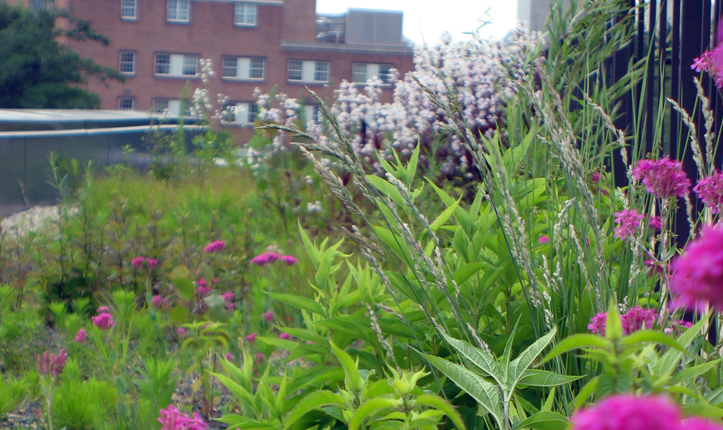

PROJECT TYPE
- Urban
- University
- Campus
- Green Roof
Environmental Benefits
- Circulates Water
- Cleans Water
- Creates Habitat for Wildlife
- Ecologically Manages Storm Water
- Reintroduces Native Plants
- Re-Uses Waste

Links
Sidwell Friends School
Washington, D.C., U.S.A.-
Close Me!
In 2007, Sidewell Friends School renovated and modernized its urban campus. An enlarged middle school building now includes an outdoor living laboratory that features a green roof, terraced wetland, rain garden, and habitat pond. This space functions as an extension of the classroom where students can learn about sustainable practices.
Photo: Andropogon Associates
Photo 1 of 8
-
Close Me!
The landscape and building function as a single integrated system that is designed to capture, clean, and re-use wastewater from the school. Dirty water and sewage flows from the kitchen and bathrooms into settling tanks, where solids are removed, before being released underground in the constructed wetland. The water circulates through the landscape for three to five days before it is re-used in the building’s toilets and cooling tower.
Photo: Andropogon Associates
Photo 2 of 8
-
Close Me!
Terraced wetlands step down the hill of the courtyard as they act as the primary filtration mechanism for building wastewater. Below the surface, dirty water from the kitchen and bathrooms flows through the dirt and sand to remove contaminants. Because the water never breaches the surface, students in the courtyard cannot smell odor nor contact the water directly.
Photo: Sidwell Friends School
Photo 3 of 8
-
Close Me!
A separate, yet equally dynamic system is designed to capture and clean storm water runoff. All paved surfaces drain into vegetated swales, which filter runoff through sand and plant material before directing it to the courtyard’s rain garden and habitat pond. The system promotes groundwater recharge and prevents polluted runoff from entering the city storm drains.
Photo: Andropogon Associates
Photo 4 of 8
-
Close Me!
The green roof on top of the new middle school building adds another layer to the school’s stormwater management system. Rather than diverting rain water to gutters and storm drains, the living roof absorbs water into its soils where it is stored and taken up by resident native plants. In large storms, clean water overflows into a drain pipe that leads to the habitat pond.
Photo: Furbish Company
Photo 5 of 8
-
Close Me!
The habitat pond, filled with storm water and located at the bottom of the sunken courtyard, acts as a center for learning and recovery. Science classes experience the benefits of water management systems by comparing water quality before and after it enters the filtration system.
Photo: Andropogon Associates
Photo 6 of 8
- 
Close Me!
The wetland, rain garden, and green roof feature more than 50 plant species native to the Chesapeake Bay Region. The varied plant-types, chosen for their ability to break down pollutants, add color and beauty to the landscape and provide habitat for native wildlife. The landscape has attracted endangered species including the Snowy Owl and Monarch Butterfly.
Photo: Andropogon Associates
Photo 7 of 8
-
Close Me!
The design re-purposed old materials from local construction projects. Before they became walkways, steps, and walls at Sidwell Friends, these flagstones cladded a deconstructed railway bridge 200 miles away.
Photo: Photo: Andropogon Associates
Photo 8 of 8
Project Facts
- Sidwell Friends is a K-12 private school located on a 15-acre site in historic Tenleytown, Washington, D.C.
- Completed in 2007, Sidwell Friends School renovated and expanded its fifty-year-old, 33,000 square-foot middle school building. The new facility includes an eco-friendly courtyard, a green roof, and an additional 39,000 square-feet of classroom space.
- A wastewater management system cleans 3,000 gallons of water per day. After circulating through the landscape for three to five days, the water is re-used in the building’s toilets and cooling tower.
- On-site sewage treatment, water re-use, and water-efficient native plants reduce the school’s water consumption by 93 percent.
- The middle school building is certified LEED Platinum.
 This Web site has been made possible through a grant by:
This Web site has been made possible through a grant by: